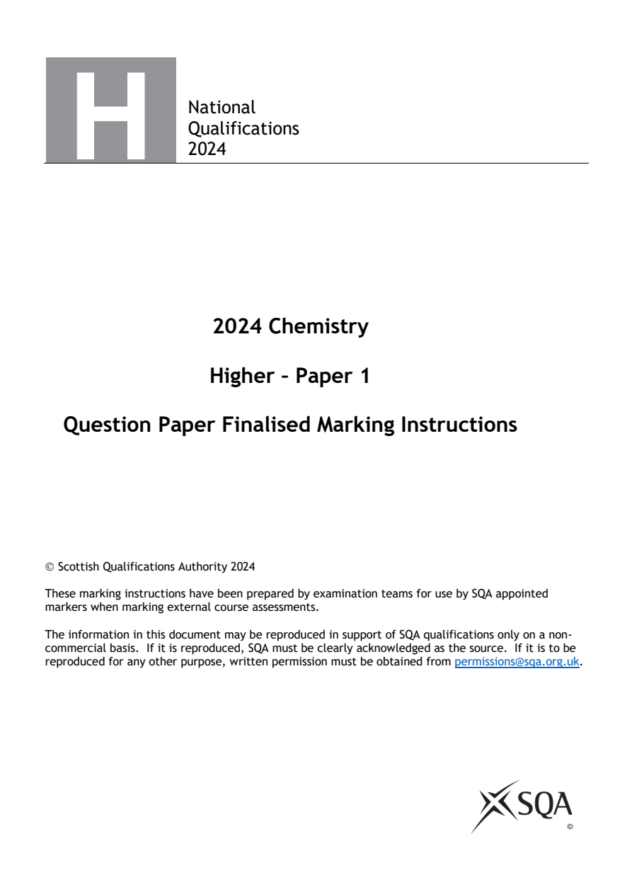
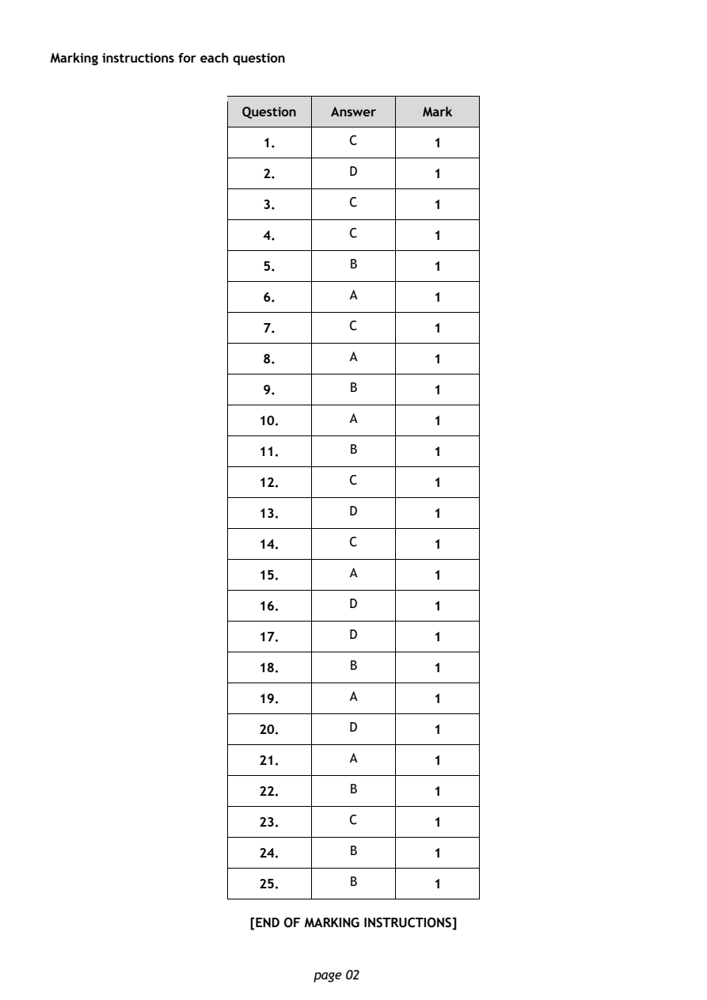

2024 Higher Chemistry - Paper 1 marking instructions
Source: Scottish Qualifications Authority (SQA) / Qualifications Scotland. This is a StemInteract HTML companion, not an official HTML edition. Selectable text is supplied alongside original page images. Use the images or original PDF for equations, powers, fractions, vector notation, tables and diagrams; text extraction cannot fully preserve mathematical layout.
Jump to a question
PDF page 1

Selectable page text
National
Qualifications
2024
2024 Chemistry
Higher – Paper 1
Question Paper Finalised Marking Instructions
© Scottish Qualifications Authority 2024
These marking instructions have been prepared by examination teams for use by SQA appointed
markers when marking external course assessments.
The information in this document may be reproduced in support of SQA qualifications only on a non-
commercial basis. If it is reproduced, SQA must be clearly acknowledged as the source. If it is to be
reproduced for any other purpose, written permission must be obtained from permissions@sqa.org.uk.PDF page 2
Paper 1, Question 1Paper 1, Question 2Paper 1, Question 3Paper 1, Question 4Paper 1, Question 5Paper 1, Question 6Paper 1, Question 7Paper 1, Question 8Paper 1, Question 9Paper 1, Question 10Paper 1, Question 11Paper 1, Question 12Paper 1, Question 13Paper 1, Question 14Paper 1, Question 15Paper 1, Question 16Paper 1, Question 17Paper 1, Question 18Paper 1, Question 19Paper 1, Question 20Paper 1, Question 21Paper 1, Question 22Paper 1, Question 23Paper 1, Question 24Paper 1, Question 25
Selectable page text
Marking instructions for each question
Question Answer Mark
1. C 1
2. D 1
3. C 1
4. C 1
5. B 1
6. A 1
7. C 1
8. A 1
9. B 1
10. A 1
11. B 1
12. C 1
13. D 1
14. C 1
15. A 1
16. D 1
17. D 1
18. B 1
19. A 1
20. D 1
21. A 1
22. B 1
23. C 1
24. B 1
25. B 1
[END OF MARKING INSTRUCTIONS]
page 02